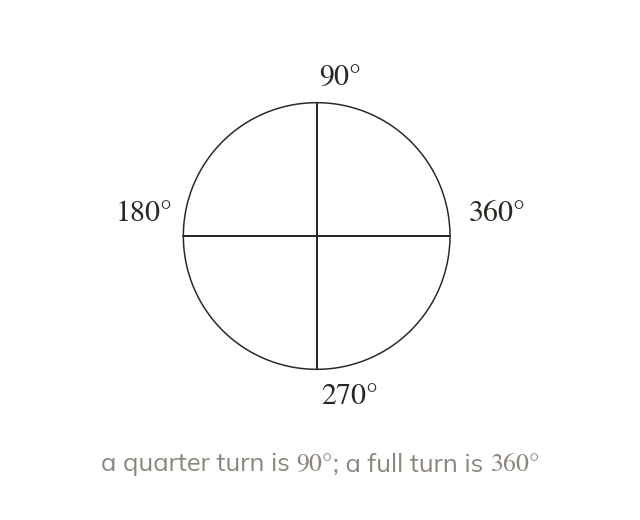

What an angle measures
An angle measures turn, in degrees. A full turn is Estimate before measuring, to check against a protractor misread.
An angle measures turn, in degrees, and a full turn is Estimating first, before measuring, builds a check against a protractor misread.